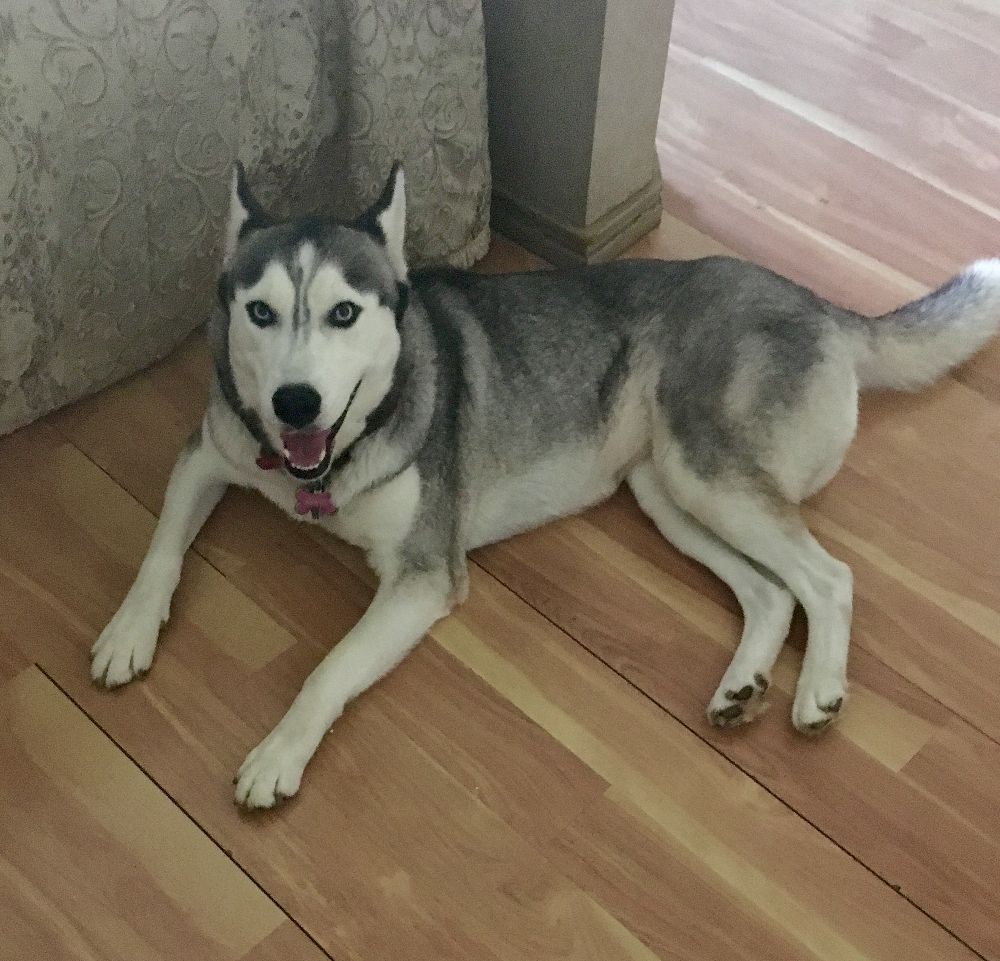

Harley is a very friendly husky that loves to cuddle. She enjoys being pet and is extra friendly with strangers, she never barks at them so she's definetly not a guardian dog. She love eeating fruit and coconut oil. Her favorite hobbie is biting her pet cousins and brother and making them mad.
